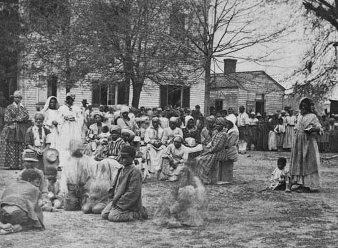
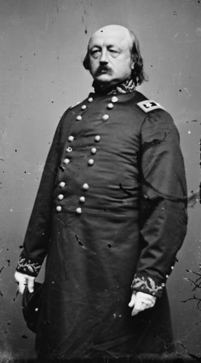
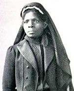
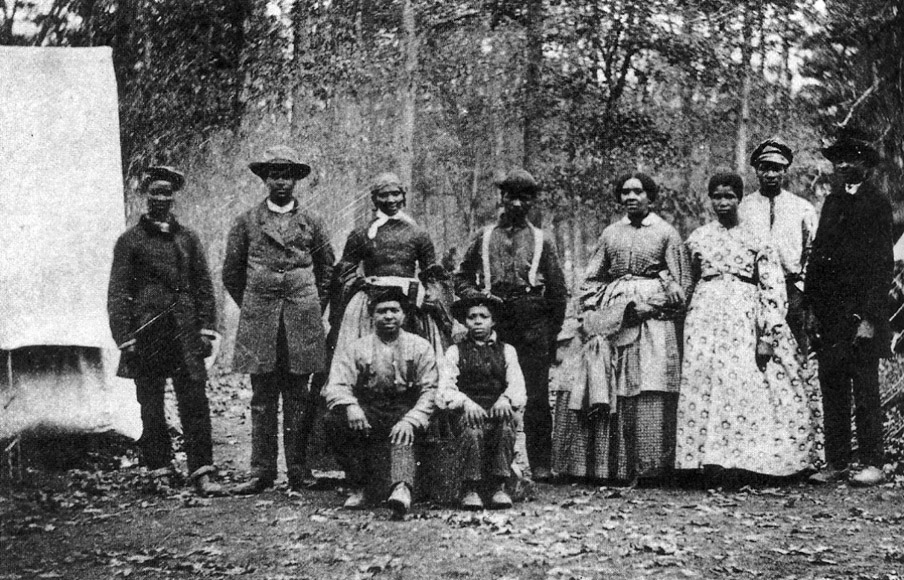
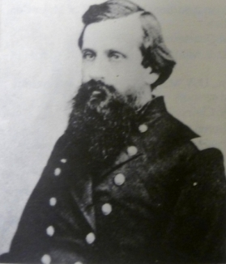
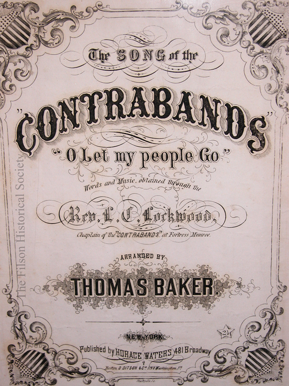

|
Arriving in the summer of 1863, Ames Bryan--newly appointed
medical inspector for black troops stationed along an
eighty-mile stretch of the Mississippi River--reported
"about ten thousand women and children ... roving about
without adequate support or protection." In southern
Louisiana the previous October, Union general Godfrey
Weitzel reported that he had more fugitive slave men, women,
and children than soldiers in his camp. While male fugitive
slaves were able to find employment in the camp, the women
and children, he wrote, were "compelled to pillage for their
subsistence." Elsewhere, a Northern journalist wrote
confidentially to Massachusetts governor John Andrew: "I am
sorry to say that the Massachusetts 24th has been acting
outrageously here-robbing, burning houses . ravishing negro
women-beating their husbands who attempted protection."
After narrating such stories, historian Allan Nevins
concluded twenty-five years ago that "the story of the
freedmen in wartime is one of gross mismanagement and
neglect." Countless such incidents, spread across time and
the geographical canvas of the Civil War South, increasingly
typified the experience of black women-women who fled the
South's plantations and farms and, in their own parlance,
"entered the army." They were women who understood the
conflict just as Frederick Douglass did: it was, he wrote,
"a war for and against slavery." And like their fathers,
husbands, brothers, and sons, slave women "were engaged in a
war with only one object: to secure their freedom." In
fleeing slavery, they contributed to the disintegration and
final destruction of slavery in the American South.
From the beginning of the Civil War to its conclusion,
fugitive slave women commanded the attention of Richmond and
Washington, slaveholders and nonslaveholders, and Southern
and Northern commanders and soldiers in the field. Like
slave men, slave women fully realized that freedom lay on
the side of the battle line held by their masters' enemy.
|

Women and children made up a disproportionate percentage
of the refugees in contraband camps.
|
And like slave men, they, too, came to be officially
designated as "contrabands of war." Forsaking caution and
risking their lives and those of their children, female
slaves proved just as likely to run away as males. And in
doing so, they defied Southerners' assumptions about their
loyalty and Northerners' contempt for their ability to
construct their own ideas about freedom.
Acting on their own understanding of the situation,
fugitive women provoked cries of outrage from both sides:
Southern planters and their wives were quick to bemoan the
loss of valued labor while Northern policymakers and
military officers vigorously protested the arrival of
unwanted contraband women. Yet in much of the public and
scholarly imagination since, the term "contraband of war"
has most frequently evoked descriptions and narratives of
fugitive slave men. Although contraband women have not been
entirely ignored within the scholarship on the Civil War,
they have nevertheless too often seemed like passive
participants in the fight for freedom.
The experience of female fugitives differed in important
ways from that of male fugitives-just as it did from that of
slave women who did not or could not flee. Like male
contrabands, African-American women endured the dangers of
flight along with the uncertainty of how they would be
received by the Federal army. But, as women, they came to
know a more hostile reception. Increasingly, they found
themselves living in a world that could be as dangerous and
dehumanizing as the one they had left behind. The demands of
Northerners could be equally as painful and exacting. Union
soldiers, for example, despised their presence and often
demanded that they leave. And even when they could find a
relatively safe haven, female fugitive slaves soon
discovered that Northern white female missionaries expected
black cooks and black household help no less than had their
former Southern mistresses. But as the slave mother who
carried her dead child, "shot by her pursuing master," into
a Union army camp "to be buried, as she said, free"
understood so well: within the Federal lines there was at
least the promise of freedom. That promise, of course, was
not universally recognized. Even less recognized was the
belief among slave men and women that slave women, too, had
a stake and a standing in the conflict.
Although the crisis of the Civil War provided the
opportunity for tens of thousands of slave women to smuggle
themselves to freedom, in the first year of the conflict
President Abraham Lincoln worked feverishly to keep the
Federal war effort focused solely on restoring the Union.
Lincoln knew that to tamper with slavery so soon would only
heighten the fears of slaveholders in the loyal border
states and discourage any lingering hope of unionism within
the Confederacy. In 1862, for example, George B. McClellan
urged a field commander set to take New Bern, North
Carolina, to "say as little as possible about politics or
the negro," to "merely state that the true issue for which
we are fighting is the preservation of the Union and
upholding the laws of the General Government." Some
commanders required no prompting whatsoever. Receiving
fugitives, Major General John A. Dix commented, would
subject the North "to the imputation of intermeddling with a
matter entirely foreign to the great questions of political
right and duty involved in the civil strife," and thus
"taint" the "holy" cause of Union. But if the first
fugitives who made their way to Union lines compromised the
Federal government's official position, the thousands who
followed rendered it utterly untenable. In fleeing, slaves
declared the unholiness of a war fought only to reunite the
nation. Moreover, a growing number of commanders and their
soldiers-facing the prospect of death from Confederate
breastworks built with slave labor, Confederate soldiers fed
by slave-grown produce, and Confederate armies supplied by
the profits of slave labor- became less and less patient
with the notion of coddling their enemy by ensuring that
slavery must somehow be unaffected by the war.
Benjamin Butler
In 1861 at Fort Monroe, Virginia, Union general Benjamin
F. Butler had taken the first step toward dealing with the
question of what to do with fugitive slaves. Registering his
opposition to the unofficial and confusing Federal policy of
non-interference on the question of slavery, Butler opened
his lines to fugitive slaves who had escaped from masters
believed to be disloyal to the Union. Since many of the
slaves had been forced by their owners and the Confederate
government to work on Confederate fortifications, Butler
further declared that the African Americans were indeed
contraband of war-a form of property, Butler wrote, "that
was designed, adapted, and about to be used against the
United States." The slaves "in this neighborhood," he added,
"are now being employed in the erection of batteries and
other works by the rebels, which it would be nearly or quite
impossible to construct on their own." Besides, such
fugitive slaves, Butler believed, could just as easily and
advantageously be folded into the Federal military force as
laborers, depriving the enemy of much-needed help while
aiding the Union army. But even the usually politically
nimble Butler found himself at a loss when it came to the
question of fugitive women and children. The "contrabands of
war" policy, as Butler had to admit within days of
promulgating it, was not designed to encompass female slaves
and children. "I am in the utmost doubt," he wrote, "what to
do with this species of property." Moreover, as Union
commanders and President Lincoln came to understand all too
well, however belatedly and reluctantly, human prizes of
|

Maj. Gen. Benjamin Butler
|
war, unlike cargos of smuggled cotton or guns, had wills of
their own. Indeed, smuggling their own persons out of enemy
lines, fugitive slaves more accurately might be termed
contrabandists, active participants in the war and in their
own fate, rather than as contraband, passive prizes of war.
And as more and more women made their way to freedom, the
term contraband became by the end of the war virtually
synonymous not with black men but with black women and
children who were, as several Northern missionaries remarked
in June 1865, largely "the families of soldiers."
The establishment of Union bases along the coasts of
South Carolina, North Carolina, and Virginia in the early
months of the war provided the first opportunities for
slaves to test the Federal boundaries of freedom. Thousands
of slaves became contrabands by virtue of their residence in
areas that came under the control of Union forces. Thousands
more fled to these areas or, rescued by Federal forces, were
brought to them. In makeshift camps and shanty towns they
attached themselves to Union areas of occupation and began
their journey to freedom. Union-occupied communities such as
New Bern, North Carolina, were quickly "overrun with
fugitives from the surrounding towns and plantations," two
of whom had "been in the swamps for five years." "It would
be utterly impossible, if we were so disposed, to keep them
outside of our lines, as they find their way to us through
woods and swamps from every side," one Union officer
admitted. Ultimately, the unexpected crush of fugitive
slaves on Union lines forced Northern policymakers and field
commanders to follow Butler's lead in opening his camps, but
fugitive slaves, and fugitive women in particular, never
ceased to draw the ire of some commanders. Midway through
the war, a Union general besieged with "whole families of
them ... stampeding and leaving their masters," described
them as an "evil."
By mid-summer 1861 the number of contrabands at Fort
Monroe had grown from only several to nearly a thousand. By
1863, more than twenty-six thousand were under the
protection of Union forces in the Virginia tidewater region.
There and elsewhere as the conflict escalated, women and
children made up a growing proportion of contraband
populations. Just as the war's promise of freedom continued
to encourage flight, other factors also played a significant
part: the increased brutalization exacted by extra work, the
growing anger of masters and mistresses, and the greatly
accelerated disintegration of black families and communities
all provided additional motivation. Until the end of the
war, however, flight remained a risky, dangerous, and often
deadly enterprise for slave women and their children.
Congress Takes Action
As the effort to separate the cause of Union from the
cause of freedom floundered, the United States Congress
passed several measures that conceded the wisdom of Northern
generals, soldiers, and civilians who-whatever their views
on emancipation-were increasingly and vigorously opposed to
allowing the South to brace its military power with slave
labor. The Confiscation Act of 1861, followed the next year
by another Confiscation Act, the Militia Act, and the
Emancipation Proclamation, were all important in helping to
expand the boundaries of freedom and the opportunities for
black women to secure protection within Federal lines. None
of these measures, however, succeeded in dispelling the
prevailing sentiment that black women had no place within
Union lines and no right to the respect or privileges
accorded white women.
If Southern black women's racially imbedded status as
slaves did not pose enough of a problem, their gender seemed
to seal their fate. In contrast, white women-although
excluded from the public debate over national sovereignty,
citizenship, slavery, and freedom-were nevertheless still
considered to have a stake in the Civil War and an important
supporting role. "Manning" the home fires in the South and
in the North, white women took on the tasks of managing and
sometimes working farms and plantations, raising children
alone, nursing the wounded, and keeping up morale amid death
and growing hunger and despair. But together, race and
gender established a rigid line of demarcation that seemed
to rule out any public or quasi public supporting roles for
black women.
For black men, however, policymakers and armies on the
march on both sides of the conflict had quickly realized the
value of employing them in building fortifications, digging
ditches, cutting roads and canals through swamps, cooking,
and cleaning. It was the South, though, that first drafted
female slaves to nurse, cook, and clean in Confederate
hospitals. Still, neither side believed that slave women had
any real part to play in the conflict or even imagined that
black women themselves might come to a different view. These
beliefs persisted even after the unexpected scope and cost
of the war shifted opinion and policy in the North to allow
the enrollment of African-American men as soldiers. That
decision, of course, would have a major impact on the public
perceptions of black "manliness" and help engineer the
transformation of the war into a larger struggle, a struggle
for emancipation. Most conspicuously, it thrust black men
into the masculine role of soldiering for union and freedom.
No corollary role emerged for black women.
Theoretically-with no hearths of their own to protect and
without lawfully recognized spouses, fathers, or sons to
nurse, cheer on in battle, worry about, or grieve for-
female slaves in the eyes of whites did not merit even the
unofficial, temporary standing accorded Northern and
Southern white women in the war. In appeals to Confederate
and Union authorities for support, charity, and compassion,
white women successfully coupled their rights and interests
to patriotic duty. As Confederate Mary C. Moore, of North
Carolina, succinctly put it: "We are all Soldiers' Wives or
Mothers."
Standing for freedom and the Union and as the wives,
mothers, daughters, and sisters of black soldiers, black
women found their efforts rebuked and Federal guarantees of
protection rarely honored. Yet they continued to push for a
reformulation of the war's objectives and for a definition
of freedom that would encompass their lives and hopes. On
plantations and farms and in urban areas they hastened
freedom's arrival by refusing any longer to defer to
mistresses or masters, or they deferred in ways that
signalled they understood that the world of slavery was
crumbling. Many women became more contrabandists than
contrabands: they smuggled themselves and their family
members out of Virginia into Washington, D.C.; out of the
|

Contraband Susie King Taylor
became a nurse for the Union Army.
|
interior of North Carolina, South Carolina, Georgia,
Louisiana, and Mississippi into Union-held areas along
coastlines and riverways; and out of Missouri into Kansas.
Running from slavery and against the tide of Northern and
Southern white opinion, slave women increasingly found
themselves running alone or in the company of other women
and children. As tens of thousands of black men enlisted in
the Union forces and thousands more were impressed as
laborers by both armies, the number of slave women left to
cope alone soared as the routes to freedom grew
simultaneously more restricted and more open. On the one
hand, black enlistment and the penetration of Union forces
into the Confederate interior enhanced the possibilities for
self-liberation and for military assisted "rescues." On the
other, Union raids could result in the impressment of
able-bodied men who had no choice but to leave their
families behind. In general, the opportunities for the
particular kind of family and community flight that had
characterized the first two years of war diminished.
In Georgia, the pattern of slave flight at the beginning
of the war revealed a clear preference for collective
escapes in family and community units. The escape of Susie
King Taylor in the company of her uncle, his family, and
other relatives typified the early pattern. "Two days after
the taking of Fort Pulaski," Taylor wrote, "my uncle took
his family of seven and myself to St. Catherine Island. We
landed under the protection of the Union fleet, and remained
there two weeks, when about thirty of us were taken aboard
the gunboat ... to be transferred to St. Simon's Island; and
at last, to my unbounded joy, I saw the 'Yankee." When
Robert Smalls hijacked the Confederate steamer Planter and
delivered it to Union forces, several women, including his
wife, the wife and sister of another man on board, and two
women described as "unprotected women in the party"
(presumably because no ties of kin bound them to any of the
men in the group), made it to freedom with him. Whenever
Union gunboats appeared along coastal waters, there were
similar patterns of flight-but there were also occasional
instances of tragedy. In 1862, one such flight by three
South Carolina women and their husbands ended in disaster.
The party was captured by Confederate authorities-and every
one of them was hanged. By the end of 1862, the pattern of
slave flight had changed, with women, not men, increasingly
leading children and elderly relatives out of slavery.
Finding Employment
Leaving slavery was one thing; finding a new home and a
source of livelihood within Union lines was another matter
altogether. The ever-growing and increasingly female
centered contraband population challenged the resources of
commanders in the field. Even where commanders were able to
implement some facsimile of Butler's approach-putting as
many of the women to work as possible-they could not always
find employment for all of the women who wanted or needed
work. Even sympathetic commanders could do little when
military exigencies demanded reallocations of manpower that
forced the complete evacuation of an area or the removal of
all but a token military force, leaving female contrabands
without a source of income and without protection from
Confederate raids.
For some, the task of finding a place within Federal
lines was further complicated by the determination of some
Union officers and soldiers to return fugitive slaves to
their masters in defiance of congressional acts and military
orders. On the Mississippi River in the summer of 1862,
David Dixon Porter, commanding a Union flotilla off
Vicksburg, protested the action of a fellow officer who
delivered up a group of forty-seven slaves, including twenty
women and children, who had entered the lines seeking
sanctuary, "to persons claiming to be their masters." One of
the individuals claiming ownership of the slaves was, Porter
wrote, "the wife of a notorious rebel."
Fugitive slaves learned early that nothing could be taken
for granted. Sanctuary within stable Union lines was never
guaranteed. In June 1862, for example, Edward Stanly, a
Unionist appointed as the Federal military governor of North
Carolina, sought assurances from Washington "that this is a
|

The 13th Massachusetts Infantry employed
several contraband women as laundresses.
|
war of restoration and not of abolition and destruction." In
the meantime, he granted masters who took an oath of
allegiance to the Union permission to retrieve their slaves
from Federal camps. He also ordered a school that had been
established for blacks at New Bern closed; educating black
children, Stanly argued, did not comport with his
instructions to "restore the old order of things."
As word of abuse at the hands of the Federal officials
filtered back to the slaves still on plantations and farms,
many decided to stay where they were or to establish
independent communities in close proximity to, but not
within, Federal lines. Such was the case early in the war in
tidewater Virginia as well as along the coasts of North
Carolina, South Carolina, and Georgia after the arrival of
Union forces and the flight of slaveholders. Fugitives in
these settlements struggled to evade unsympathetic Union
soldiers or raids by Confederate partisans, but many of the
new communities were short-lived. At Edisto Island, South
Carolina, a Confederate raid in January 1862 captured a
large group of fugitive slaves that "had assembled here from
all points." By mid-summer that year, Union forces had to
evacuate the still-threatened survivors at Edisto, forcing
out of employment some two thousand blacks who had been
cultivating the land. At nearby Botany Bay, between one
thousand and fifteen hundred contrabands tried to avoid
capture by Confederate forces by destroying the bridges that
connected them to Edisto Island. But with Confederate forces
intent on destroying the settlement, a Union officer decided
to evacuate that community, too. The contrabands, he wrote,
had become "a great annoyance to me and also the commander
of the Gun Boat as one or the other must be on hand to
protect them or they are run off by the rebels."
Some independently established communities held together
for the duration of the war, but their existence remained
fragile and dependent on the presence of Union forces,
sympathetic commanders, and often the assistance of Northern
aid societies. Yet, despite the potential and real dangers
independent settlements faced, they allowed slaves to hold
families and communities together or to reconstitute them.
Whether at Botany Bay in South Carolina, or Roanoke Island
off the North Carolina coast, or at Hampton, Virginia,
female contrabands could for a time count on the support of
the husbands, fathers, and brothers with whom they had fled
slavery. At Craney Island near Norfolk, Virginia, for
example, female fugitive slaves were able to re-establish
family life with their male kin and also find work as
seamstresses and cooks. When alone, the risks were great.
Knowing that, male contrabands at Edisto Island in March
1862, recruited to go to Key West as military laborers, were
willing to leave only if they could be assured that their
wives and children would be cared for. It was of no small
consequence that as the war spread into the Confederate
interior, as lines of battle and positions shifted, and as
armies were more often on the move, the independence of
contraband communities of all types was threatened. A
settlement behind Union lines could in the matter of an hour
find itself back within Confederate lines.
Contrabands at Craney Island, the majority of whom were
refugees from Suffolk, Virginia, faced such a situation at
the end of 1864 when Craney Island was declared outside
Federal lines. The Craney Islanders were still more
fortunate than many evacuees. They were removed to the
mainland where several hundred were resettled on government
farms. Others found housing in a newly established
contraband village where they were provided with one-acre
plots for growing vegetables.
But even in the best of circumstances, hunger and
insecurity threatened their efforts to construct new lives
as free people. At Craney Island, a Northern missionary
reported, rats had become part of the contrabands' diet. And
the continued threat of Southern military action forced yet
another move for some of the Craney Island farmers. But just
as threatened military lines and shifting commands could
create havoc in the lives of the contrabands, so also could
demographic changes in contraband populations-resulting in
inadequate food, shelter, and clothing. Any or all of these
factors could dictate evacuation and resettlement.
Unlike the Craney Islanders-who despite several
relocations were able to remain within the general vicinity
of their old homes, friends, and family in the Hampton Roads
area-the fortunes of war more often than not carried
thousands of female slaves far from their homes and male
kin. Slave women freed during Union raids in Florida, for
instance, found themselves evacuated to Hilton Head, South
Carolina. "Poor creatures! They are the most wo-be-gone
set-no shoes, hats or clothing," one observer wrote. Federal
raids into the interior of South Carolina, in turn, sent
thousands of contrabands to the coastal town of Georgetown.
Each new arrival of contrabands stretched the resources of
the army and often created tensions between the new arrivals
and the established contrabands.
The women who left Florida for Hilton Head or inland
South Carolina for the coast with their Union escorts more
and more typified the gendered pattern of slave flight.
Especially after 1863, it became less and less likely that
fathers, older sons, or husbands would accompany female kin
to freedom. More women took the chance on their own,
sometimes spurred by encouragement sent back by absent
husbands but as often as not with nothing more than the
promise of freedom to urge them on.
Burdened with added work and family duties in the absence
of their fathers and husbands, confronted by mistresses who
believed only they could grieve for dead or absent husbands
and sons, faced with the wrath of slaveholders and other
whites eager to wage war on slave women whose male kin
enlisted in the Union army, thousands of slave women secured
their own freedom and that of their children. Yet the notion
that female contrabands were more vagabonds than refugees,
more nuisances than helpers, more "whining and complaining
beggars" than suffering wives, daughters, and mothers,
persisted and continued to influence the character and
implementation of wartime policies affecting them. As slave
women increasingly walked out of slavery either alone or
with their children, Union commanders, exhausted by the
business of waging war or simply crippled by racism, were
ill-disposed to accommodate them.
Responses to the Contrabands
The flight of slave women prompted a storm of criticism
and complaint, particularly when their goal was to be near
their soldier husbands. As one Union officer in the
Mississippi Valley complained: "the innumerable huts of
contrabands in the vicinity of the camps and fortifications
are a nuisance besides being an expense to the Government."
Particularly galling was how the female contrabands and
their children were "obtaining Rations and clothing from the
Soldiers, notwithstanding the strict watchfulness of
officers and the heavy penalty inflicted upon offenders."
Like so many Union officers elsewhere, Colonel Herman Lieb
recommended removing the women to a point somewhere outside
the main Union lines where they could be made to support
themselves. Colonel John Eaton, Jr., a chaplain and General
Superintendent of Freedmen for the Department of the
Tennessee and State of Arkansas, objected to such
"indiscriminate expulsion of the people" and protested that
some commanders issued passes to "lewd women and others" to
|

Col. John Eaton, Jr.
|
wander about the black regiments' camps while at the same
time they "opposed efforts to secure the legal marriage of
their soldiers." The white commander of a black Missouri
regiment issued an edict against marriages between the men
in his regiment and the "Common place women of the town."
Northern white perceptions stood in striking contrast to
those of black soldiers who defied orders not to feed and
clothe their families. Even without blood ties to contraband
women, the generosity of black troops stood. After rescuing
450 slaves, the men of the Twenty-fifth United States
Colored Infantry Regiment proudly "gave them our tents, and
... put them up in our old camping place." Slave women,
generally unable to write or receive mail from their male
kin, often had no choice but to travel to see them when
possible. In Alabama, problems arose when a group of wives
who had travelled more than one hundred miles from Tennessee
to visit their husbands were refused both admission to the
camp and visits with their spouses. To prevent their going
out of camp to visit the women, husbands were handcuffed.
Defending his position, the commander maintained that the
policy was the only way to "prevent the camp . . . from
becoming a brothel on a gigantic scale." He had previously,
he wrote, been forced to deny entry to "large herds of
colored prostitutes" who "flocked" to his camp following
payday. When his men protested that the women were their
wives, not prostitutes, the commander wrote: "it is just
within the bounds of possibility that some virtuous wives
may have been amongst the number so excluded from camp, but
I gravely doubt it."
Contraband women at Camp Nelson, Kentucky, faced similar
treatment at the hands of Union officials. Fleeing abusive
masters and seeking the protection and support of their
spouses, hundreds of "women and children of colored
soldiers," as a Northern missionary described them, took up
residence at the camp, some earning a livelihood cooking and
washing for the soldiers. In November 1864 the huts and
cabins of the soldiers' families were ordered torn down and
the residents driven outside Union lines with no time to
prepare. Many had no food, or shoes and clothing to protect
them from the cold. All had nowhere to go. The following
January, contraband women living in temporary huts near
Memphis were similarly humiliated. They have, wrote the
commander of the black regiment to which they clung, "no
visible means of support, and ... are, for the most part,
idle, lazy vagrants ... exercising a pernicious influence"
over the black soldiers who aid them and "claim them as
wives." The commander sought permission to remove the
several hundred black women to President's Island in the
Mississippi River. Again, the effort backfired. As they had
the previous year, the women resisted and were supported by
their husbands. They "run ... for protection" to their
husbands, the commander complained, and the "husbands swear
their families shall not be moved to the Island and in some
instances have come out under arms to prevent it." Despite
hostile commanders as well as other obstacles, Union camps
and Federal lines remained the most logical target of
flight. There, contraband women could take-comfort in being
free, in having their children, soldier husbands or other
male relatives, and friends nearby, in the joy that came
when families separated through sale were reunited in
contraband camps.
While slave women planned escapes with their children in
mind, many were forced to leave them behind. For these
women, to the general problems of contraband life-disease,
death, poor food and housing-were added the pain and anxiety
of not knowing where their children were, if they were still
alive, or whether they had been sold or otherwise abused by
their masters. When her husband enlisted in the U.S. Army,
Frances Johnson's master beat her and attempted, she stated,
"to make an indecent exposure of my person before those
present." She fled, making her way to her sister's home
seven miles away in Lexington, Kentucky, where she found
lodging for herself and her three children. But when she
returned for her children, she was captured with two of them
after finding one too ill to travel. Finally, with her
master holding one child hostage and with no hope of getting
the others safely away, she fled alone to Camp Nelson.
The Civil War ended with no satisfactory solution to the
question of contraband women. To the extent that any
consensus emerged, it had mainly to do with how best to put
black women back to work. For white women North and South,
the expediencies of war had blurred the gendered boundaries
of the workplace. But for black women, there was no need to
explain the phenomenon of their wartime work. Justifying her
presence, along with other female family members, in the
field doing men's work, a Northern white woman told Mary
Livermore: "we're serving the country just as much here in
the harvestfield as our boys are on the battle-field-and
that sort o' takes the edge off from this business of doing
men's work, you know." Sanctioning this interpretation,
Livermore observed that "the women in the harvest-field were
invested with a new and heroic interest, and each
hard-handed ... woman was a heroine."
No such noble sentiments influenced white perceptions of
black women's work. Discussions of what to do with them
rarely went beyond how to employ them in army and contraband
camps or on Northern-held plantations. Few whites saw
African-American women's work as either heroic or temporary.
Rather, the goal was to maintain black women as permanent
laborers, self-supporting and self-sufficient if possible,
and integral to reestablishing the South's plantation
economy. That the reconstruction of the plantation would
proceed in part on the backs of black women was taken for
granted. During the war, female contrabands were
increasingly put to work on abandoned and confiscated farms
and plantations operated by the Federal government or by
Northern lessees. Some of the enterprises were in safe
areas; many were not. Confederate guerrilla raids too
frequently resulted in the capture of black women, the
separation of children from their families, and death. In
Louisiana in 1863, a Confederate force shelled a contraband
camp at Goodrich's Landing; homes were burned and twelve
hundred contrabands were captured after the attackers
surrounded the small force of black troops protecting the
settlement. Unknown numbers died. When reinforcements
arrived, they were shocked at "the sight of the charred
remains of human beings." At Lake St. Joseph, guerrillas
carried off more than one hundred contrabands after raping
the women and separating them from their children.
Throughout the war, black soldiers protested policies and
actions that denied their families fair treatment and the
basic civilities accorded white women and children. They
protested policies that removed their families and those
that sought to force their wives to work. At Memphis, black
troops, supported by their officers, sought the exemption of
their wives from plantation labor. In fact, complaints
regarding the unfair and abusive treatment of contraband
women poured into every department of the army throughout
the occupied South. Abusive white soldiers and corrupt
quartermasters frequently made life for women within the
|

Contrabands often sang together to keep their
sprits high. "The Song of the Contrabands" was a popular choice;
on one occasion, President Lincoln visited a contraband camp in
Washington and joined in a rendition of the tune.
|
lines as difficult as possible, and oftentimes orders
requiring the maintenance of soldiers' wives Northerners and
Southerners by fleeing slavery at the risk of their lives.
Thus had they fought for freedom no less than their male
counterparts. By 1864 hundreds of refugee and contraband
camps had witnessed the arrival of hundreds of thousands of
fugitive slaves, a large proportion of whom were women.
Keeping pace with William T. Sherman's army in its march
across Georgia, black women suffered like all those who had
followed other Union armies. In the train of Sherman's army,
one Union officer wrote: "Babies tumbled from the backs of
mules to which they had been told to cling, and were drowned
in the swamps, while mothers stood by the roadside crying
for their lost children." It has been estimated that of the
approximately twenty-five thousand blacks who joined
Sherman's army, fewer than seven thousand made it to the
coast.
The question raised by Butler in 1861 haunted Federal
policy until the end of the war. Butler's solution,
replicated by Union commanders in other areas, put
able-bodied women to work along with men and charged the
cost of supporting children and the elderly against their
wages. Under the force of military exigencies, the crushing
weight of slavery's disintegration, inadequate wages, and
the prejudice that cast black women as a special "species of
property," the policy withered.
In the end, the slaves' understanding of the conflict had
triumphed, and the flight of slave women, no less than that
of slave men, helped to force a redefinition of the war's
goals to include freedom. Freedom indeed came with the end
of the war, but the image of black women as somehow not
women lingered and took on new life with the reconstruction
of the cotton plantation and of white womanhood in the
postwar South. A month after the war, for example,
authorities issued orders in the former capital of the
defeated Confederacy to round up all unemployed black women.
Even into the twentieth century, the idea that black women's
participation in the Civil War could be deemed heroic or
patriotic was slow to emerge. Susie King Taylor, pleading
for justice at the turn of the century, wrote:
There are many people who do not know what some of the
colored women did during the war. There were hundreds of
them who assisted the Union soldiers by hiding them and
helping them to escape. Many were punished for taking food
to the prison stockades ... although they knew the penalty,
should they be caught giving them aid. Others assisted in
various ways the Union army. These things should be kept in
history before the people.
In the American Civil War, female slaves contested gender
and racial boundaries and whenever possible-like their
husbands, brothers, fathers, and sons-took advantage of and
reshaped policies meant to render them mute, uninterested
bystanders. In the end, just as enlistment in the Union army
had recast black men as active participants in a new
struggle, black women throughout the South by their actions,
too, had become their own agents for change.
Source: Edward D. C. Campbell and Kym S. Rice, eds. Southern Women, the Civil
War and the Confederate Legacy (Charlottesville, VA: The Museum of the Confederacy,
1996), 55-72.
|